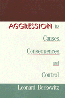

<body bgcolor="#FFFFFF" text="#000000" link="#0000FF" vlink="#CC0000" alink="#CC0000"><center><hr width="350" size="1" align="center" noshade>A comprehensive examination of the nature of human aggression<hr width="350" size="1" align="center" noshade><p><a href="https://cdcshoppingcart.uchicago.edu/Cart/ChicagoBook.aspx?ISBN=9781566390330&&PRESS=temple" target="_top">Buy this book!</a> | <a href="https://cdcshoppingcart.uchicago.edu/Cart/Cart.aspx?PRESS=temple" target="_top">View Cart</a> | <a href="https://cdcshoppingcart.uchicago.edu/Cart/Cart.aspx?PRESS=temple" target="_top">Check Out</a></p><p></p></center><!--none//--><h1>Aggression</h1>
<H2>Its Causes, Consequences, and Control</H2>
<h3>Leonard Berkowitz</h3>
<P>cloth 1-56639-033-8 $59.95, Jan 93, <FONT COLOR=#990033>Out of Stock Unavailable</FONT>
<BR> 496 pp
6.4x9.3
</P><P>In this wide-ranging discussion of the social psychology of human aggression, Leonard Berkowitz examines the findings of behavioral research about conditions and circumstances that promote anger and aggression. Emphasizing that aggression takes numerous forms and has many causes, Berkowitz distinguishes between instrumental aggression (assaults carried out to benefit the attacker in some way) and emotional (impulsive or expressive) aggression. He points out that they have different origins and aims and are best controlled in different ways. Although he gives much attention to the conditions promoting deliberate instrumental aggression, Berkowitz also shows that many assaults are highly emotional acts. He therefore considers conceptions of emotion and the nature of anger and offers a new theory of the factors affecting impulsive aggression. The discussion throughout is based on both laboratory experiments and "real world" field studies.
<P>Berkowitz summarizes what behavioral scientists have learned about the nature of highly aggressive personalities and the family and childhood backgrounds of those who are disposed to violent, antisocial behavior. He also reports important studies of the effects of violence depicted in the mass media. In discussing conditions that lead to child abuse, spouse battering, and murder, Berkowitz identifies such risk factors as childhood experiences, frustration, poverty, and personal and social stresses, as well as external events and situations that bring hostile ideas to mind. He also examines biological influences, such as hereditary factors, hormones, and alcohol, that promote aggressive tendencies.
<P>Reviewing studies of the use of punishment and legal controls (e.g., the death penalty, gun control laws), the author discusses how this socially destructive behavior might be reduced. He presents research on the effectiveness of various psychological procedures, including the supposedly cathartic methods, instrumental training, and cognitive and anger control techniques.
<P>This general introduction to the research and theorizing about human aggression seeks to promote understanding of the fundamental causes of destructive conduct, the conditions that can increase the chances of aggressive behavior, and the most effective steps that could be taken to reduce the likelihood of violence in society.
<BR>&nbsp;<h2>Excerpt</h2><P>Excerpt available at <a href="http://www.temple.edu/tempress">www.temple.edu/tempress</a></p>
<BR>&nbsp;<h2>Contents</h2><P>
<p>Foreword
<br>Preface
<br>1. The Problem of Aggression
<br><I>What is Aggression? &#149
Some Words about Anger, Hostility, and Aggressiveness &#149
Summary &#149
Notes</I>
<p><b>Part I: Emotional Aggression</b>
<br><I>What is Emotional Aggression? &#149
Notes</I>
<p>2. Effects of Frustrations
<br><I>The 1939 Frustration-Aggression Hypothesis &#149
Revision the Frustration-Aggression Hypothesis &#149
Summary &#149
Notes</I>
<p>3. We're Nasty When We Feel Bad
<br><I>Negative Affect as the Root of Emotional Aggression &#149
Negative Affect, Aggressive Inclinations, and Anger &#149
Pulling Out Implusive Aggression: The Role of Aggressive Cues &#149
Summary &#149
Notes</I>
<p>4. Does Thinking Make It So?
<br><I>Cognitions and Emotion &#149
Theories of Emotion &#149
Cognitions Don't Always "Make It So": Evidence of Noncognitive Influences upon Emotion &#149
Thoughts Do Matter &#149
Summary &#149
Notes</I>
<p><b>Part II: Aggressive Personalities</b>
<p>5. The Identification of the Violence Prone
<br><I>Are Some People consistently Disposed to be Aggressive? &#149
How Aggressive Personalities Operate &#149
Summary &#149
Notes</I>
<p>6. The Development of Violence Proneness
<br><I>Familial and Peer Influences on the Development of Aggressiveness &#149
Childhood Experiences &#149
Direct Influences on the Development of Aggressiveness &#149
Indirect Influences &#149
Summary &#149
Notes</I>
<p><b>Part III: Violence in Society</b>
<p>7. Violence in the Media
<br><I>Entertaining, Informative, Instructive...and Dangerous? &#149
Violence on the Screen and Printed Page: Immediate Effects &#149
The Prolonged Influence of Repeated Exposure to Media Violence &#149
Summary &#149
Notes</I>
<p>8. Domestic Violence
<br><I>Explaining Domestic Violence &#149
Summary &#149
Notes</I>
<p>9. Murder
<br><I>An Introduction to Murder &#149
Conditions That Influence Murders &#149
The Violent Interaction &#149
Summary &#149
Notes</I>
<p><b>Part IV: Controlling Aggression</b>
<p>10. Punishment and Societal Controls
<br><I>Using Punishment to Deter Violence &#149
Would Gun Control Lessen Violent Crimes? &#149
Summary &#149
Notes</I>
<p>11. Psychological Procedures for Controlling Aggression
<br><I>Catharsis: Reducing One's Violent Urges by Aggressing &#149
Developing New Ways of Behaving &#149
Summary &#149
Notes</I>
<p><b>Part V: Some Special Questions</b>
<p>12. Biology and Aggression
<br><I>A "Lust for Hatred and Destruction"? &#149
Are People Instinctively Driven to Violence? &#149
Critique of the Traditional Instinct Conception &#149
Heredity Hormones &#149
Alcohol and Aggression &#149
Summary &#149
Notes</I>
<p>13. Aggression in the Laboratory
<br><I>The Typical Laboratory Procedure &#149
Some Considerations in Support of Laboratory Experiments &#149
Summary &#149
Notes</I>
<p>14. In Conclusion: Some Lessons to be Drawn
<br><I>Different Kinds of Aggression: Instrumental and Emotional &#149
Is Violence Inevitable? &#149
The Determinants as Risk Factors &#149
Controlling Violence</I>
<p>Bibliography
<br>Index
</P><BR>&nbsp;<H2>About the Author(s)</H2>
<P><B>Leonard Berkowitz</B> is Vilas Research Professor in Psychology at the University of Wisconsin, Madison. The internationally known recipient of a distinguised scientist award by the American Psychological Association, he is the author of several books and more than 170 articles.</P>
<BR><H2>Subject Categories</H2>
<p><A HREF="/tempress/psycho.html" TARGET="_top">Psychology</a>
</p>
<p align="center"><a href="https://cdcshoppingcart.uchicago.edu/Cart/ChicagoBook.aspx?ISBN=9781566390330&&PRESS=temple" target="_top">Buy this book!</a> | <a href="https://cdcshoppingcart.uchicago.edu/Cart/Cart.aspx?PRESS=temple" target="_top">View Cart</a> | <a href="https://cdcshoppingcart.uchicago.edu/Cart/Cart.aspx?PRESS=temple" target="_top">Check Out</a></p><p><font face="Arial" size="1"><a href="copyright.html" onMouseOver="window.status='Web Copyright Policy';return true;" onMouseOut="window.status=''" title="Web Copyright Policy">&copy;</a> 2015 <a href="http://www.temple.edu" target="new" onMouseOver="window.status='Link to Temple University home page';return true;" onMouseOut="window.status=''" title="Link to Temple University home page">Temple University</a>. All Rights Reserved. http://www.temple.edu/tempress/titles/berko_reg.html</font></p>